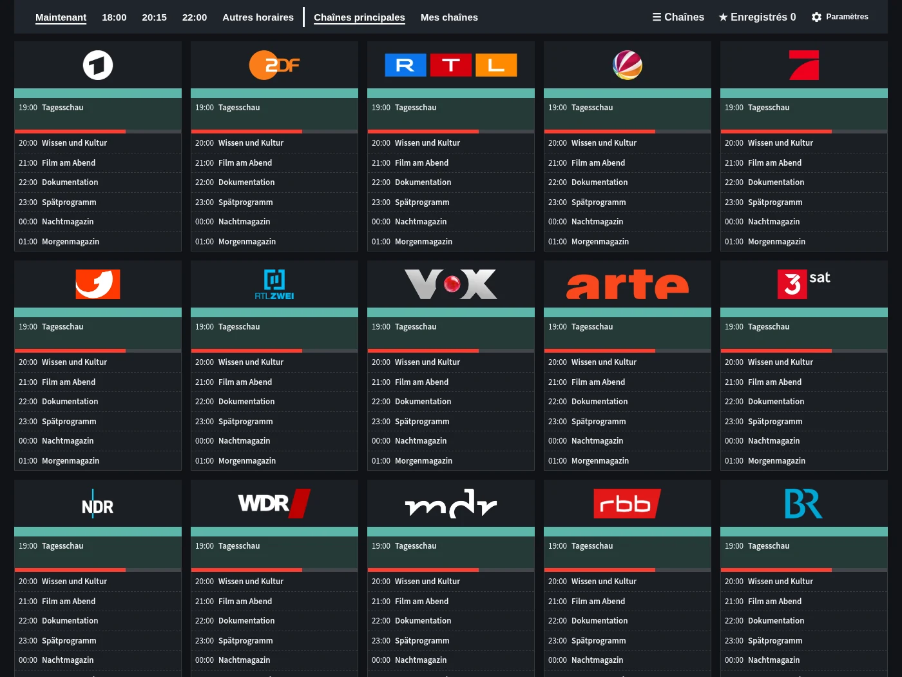
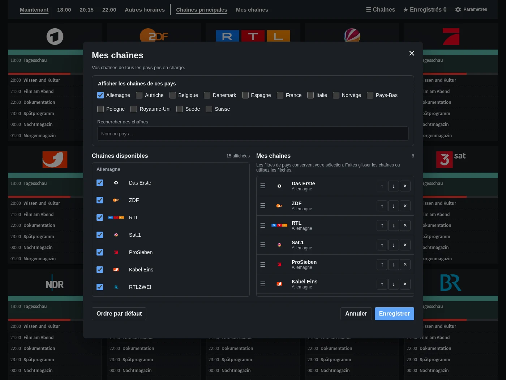
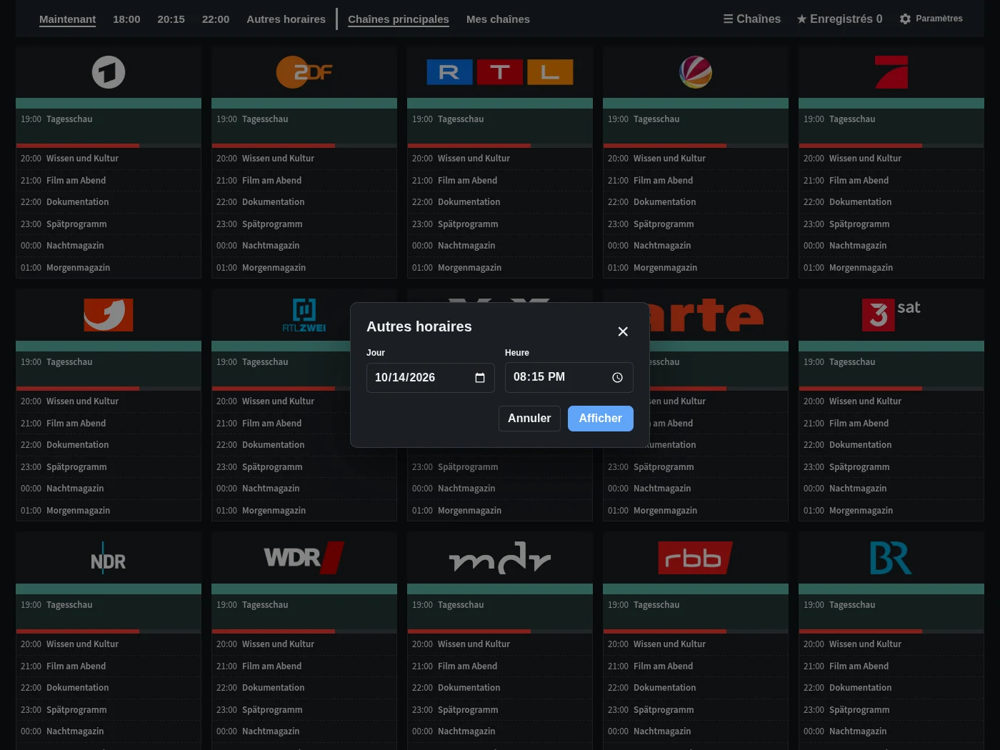
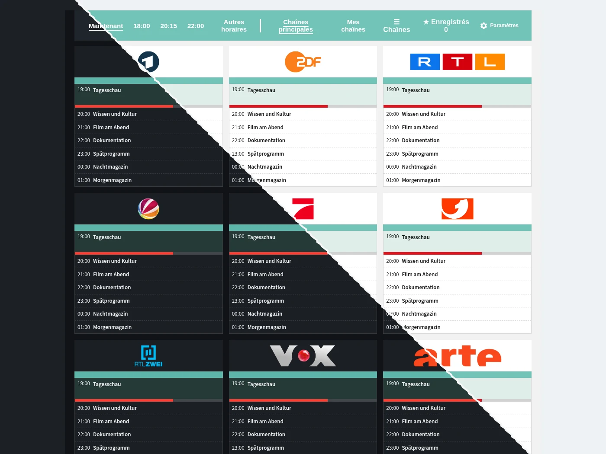

Programme TV
Chaînes, horaires et émissions en un coup d’œil. Accédez directement à maintenant, 18:00, 20:15 ou 22:00.
Découvrez le programme TV, les listes de chaînes personnelles, le choix des horaires et la carte facultative.

Chaînes, horaires et émissions en un coup d’œil. Accédez directement à maintenant, 18:00, 20:15 ou 22:00.

Choisissez vos chaînes préférées parmi les pays disponibles et classez-les à votre façon.

Choisissez une autre date et une heure sans quitter le guide.

Ajoutez TV Guide à votre tableau de bord. Le guide complet est aussi disponible dans la barre latérale. L’image montre la carte en mode clair et sombre.
Programmes d’exemple. Les titres restent dans leur langue d’origine.
Gratuit et directement dans Home Assistant.
Ouvrir dans HACS